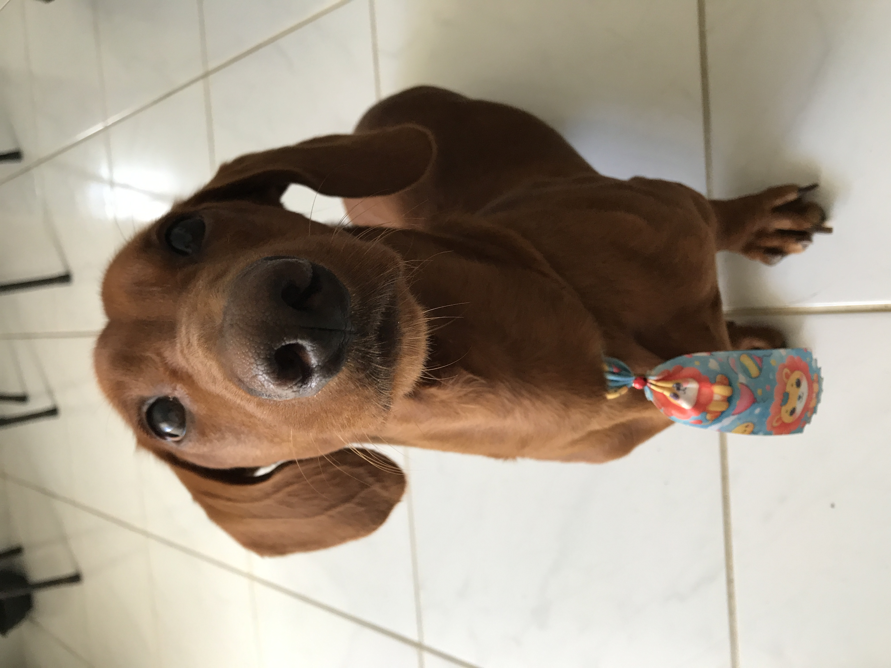
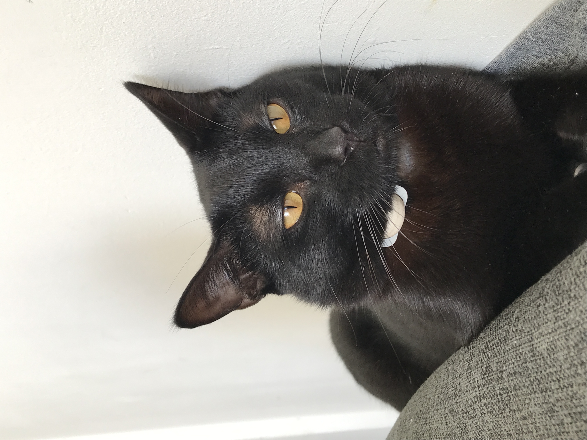

Use a barra de pesquisa para encontrar um pet.
Recompensa: Muita Gratidão

Bairro Jaguaribe, PB
Dachshund carinhoso e com uma manchinha branca no peito.
Eu vi o Ozzy!Dono chora todos os dias

Centro, João Pessoa - PB
Gato preto e medroso. Sem coleira.
Eu vi o Hidan!